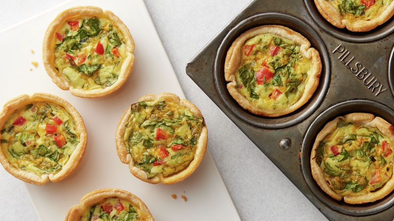

Quiche
Home

Description
Ingredients
- Butter
- Vegetables
- Seasonings
- Cheeses
- Pie Shell
- Eggs
- Milk
Steps
- Saute the onion and garlic in butter
- Stir in the remaining veggies, feta, and 1/2 cup cheddar. Season and pour into the Shell
- Whisk the eggs and milk together, then season. Pour into the shell
- Bake for 15 minutes, then sprinkle with remaining cheese
- Continue baking until the quiche is set in the center